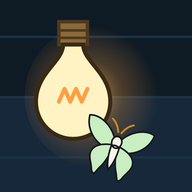

Lighting the porch…
This porch needs a newer browser. On iPhone, update to iOS 18.2 or later in Settings › General › Software Update, then come back.
On a computer, any current Chrome, Edge, Firefox or Safari works.
Turn your phone upright to play.